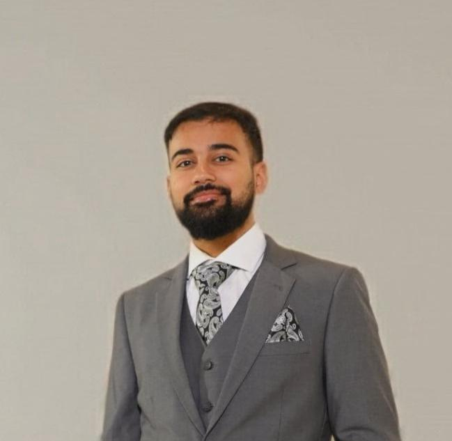

Introduction
Vision-language foundation models demonstrate strong performance in pattern recognition, but lack robust reasoning capabilities, limiting their application in specialized domains. Medical imaging highlights this critical limitation: diagnosis requires connecting visual findings with clinical knowledge through explicit reasoning processes. While foundation models excel at visual recognition, medical decision-making demands interpretable chain-of-thought diagnosis, multimodal grounding of visual features in clinical knowledge, comprehensive evaluation frameworks for reasoning quality, and probabilistic reasoning for clinical decisions. Given the rapid advancements in foundation models over the past three years, addressing these reasoning gaps has become essential for deploying AI systems in high-stakes healthcare applications where explainability and trustworthiness are paramount.
The NeurIPS 2026 Workshop on Medical Reasoning with Vision Language Foundation Models (Med-Reasoner) aims to bring together computer vision researchers, medical AI experts, imaging scientists, and practicing clinicians to discuss state-of-the-art advancements, applications, and challenges in reasoning capabilities for medical vision-language models. The workshop will foster discussions that inspire innovation in interpretable medical AI and address real-world deployment challenges including privacy constraints, workflow integration into healthcare systems, and ensuring fairness across patient populations.
Invited Speakers
Speakers will be announced soon.
📑 Accepted Papers
Accepted papers will be announced after the review process.
🗓️ Workshop Schedule
The full schedule will be announced closer to the workshop date.
Organizers

Anas Zafar
Research Associate
UT MD Anderson Cancer Center
Muhammad Waqas, PhD
Postdoctoral Fellow
UT MD Anderson Cancer Center

Jia Wu, PhD
Associate Professor
UT MD Anderson Cancer Center
David A. Jaffray, PhD
Sr VP, Chief Tech & Digital Officer
UT MD Anderson Cancer Center
Tianlong Chen, PhD
Assistant Professor
UNC Chapel Hill

Nouha Dziri, PhD
Research Scientist
Allen Institute for AI (Ai2)
Xiaoxiao Li, PhD
Associate Professor
University of British Columbia

Alejandro Lozano
PhD Candidate
Stanford University

Faryab Haye
Applied Scientist
Amazon
🏆 Awards
Award details will be announced soon.
Sponsors
Sponsorship details will be announced soon.
📅 Important Dates
Important dates will be announced soon.
Contact
If you have any questions, please contact:
AZafar2@mdanderson.org
anaszafar98@gmail.com
News
| Aug 01, 2026 | 🎉 Med-Reasoner has been accepted at NeurIPS 2026! Stay tuned for more details. |